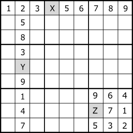
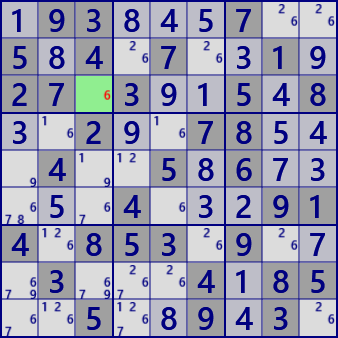

Last Digit

"Last Digit" is a rule of numerical arrangement of Sudoku.
In a house with one indeterminate cell, that cell is determined to the remaining digits.
For this example, set X=4 Y=6 Z=8.
Example
Cells with dark background are puzzle digits, light cells are solved cells, small digits are candidate digits
The r3c3 is determined to be digit 6.
.93...7..5.4.7..1.27.3..5.8..2..78...4..5.6.....4...914.853.9...3...4.85..5..9.3.
If simple program, it will be the following code.
Last Digit C# program(simple program)
partial class GNPZ_Analyzer{
public bool gSDK_LastDigitOld( ){
int rc=0;
UCell P0=null;
for( int tfx=0; tfx<27; tfx++ ){
int cc=0;
for( int nx=0; nx<9; nx++ ){
UCell P = GetCell_House( pBDL, tfx, nx, ref rc );
if( P.No==0 ){
if( ++cc>=2 ) goto nextTry;
P0 = P;
}
}
if( cc==1 ){
SolCode=1;
P0.FixedNo = P0.FreeB.BitToNum()+1;
if( !MltSolOn ) goto LFond;
}
nextTry:
continue;
}
LFond:
.
. (Solution report code)
.
return true;
}
private UCell GetCell_House( List<UCell> pBDL, int tfx, int nx, ref int rc ){ //nx=0...8
int r=0, c=0, fx=tfx%9;
switch(tfx/9){
case 0: r=fx; c=nx; break; //row
case 1: r=nx; c=fx; break; //column
case 2: r=(fx/3)*3+nx/3; c=(fx%3)*3+nx%3; break; //block
}
return pBDL[r*9+c];
}
}
Next is the Linq version. The essential part of the analysis algorithm is one line.
if( pBDL.IEGetCellInHouse(tfx,0x1FF).Count()==1 )
IEGetCellInHouse is defined as a static class with other similar functions
as an extension function of List
Last Digit C# program(Linq version)
public class SimpleSingleGen: AnalyzerBaseV2{
public bool LastDigit( ){
bool SolFond=false;
for( int tfx=0; tfx<27; tfx++ ){
if( pBDL.IEGetCellInHouse(tfx,0x1FF).Count()==1 ){
SolFond=true;
var P=pBDL.IEGetCellInHouse(tfx,0x1FF).First();
P.FixedNo=P.FreeB.BitToNum()+1;
if( !MltSolOn ) goto LFond;
}
}
LFond:
if(SolFond){
.
. (Solution report code)
.
return true;
}
return false;
}
}
IEGet function
static public class StaticSA{
static public IEnumerable<UCell> IEGetCellInHouse(this List<UCell> pBDL, int tfx, int FreeB=0x1FF){
int r=0, c=0, tp=tfx/9, fx=tfx%9;
for( int nx=0; nx<9; nx++ ){
switch(tp){
case 0: r=fx; c=nx; break;//row
case 1: r=nx; c=fx; break;//column
case 2: r=(fx/3)*3+nx/3; c=(fx%3)*3+nx%3; break;//block
}
UCell P=pBDL[r*9+c];
P.nx=nx;
if( (P.FreeB&FreeB)>0 ) yield return P;
}
}
}
static public class StaticSA{
static public IEnumerable<UCell> IEGetCellInHouse(this List<UCell> pBDL, int tfx, int FreeB=0x1FF){
int r=0, c=0, tp=tfx/9, fx=tfx%9;
for( int nx=0; nx<9; nx++ ){
switch(tp){
case 0: r=fx; c=nx; break;//row
case 1: r=nx; c=fx; break;//column
case 2: r=(fx/3)*3+nx/3; c=(fx%3)*3+nx%3; break;//block
}
UCell P=pBDL[r*9+c];
P.nx=nx;
if( (P.FreeB&FreeB)>0 ) yield return P;
}
}
}